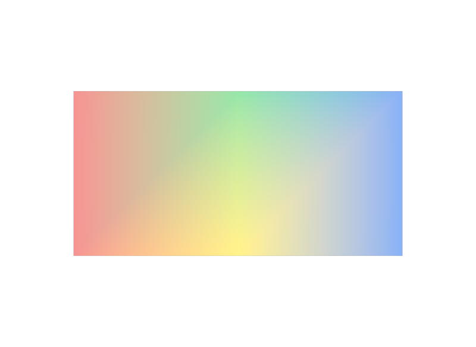
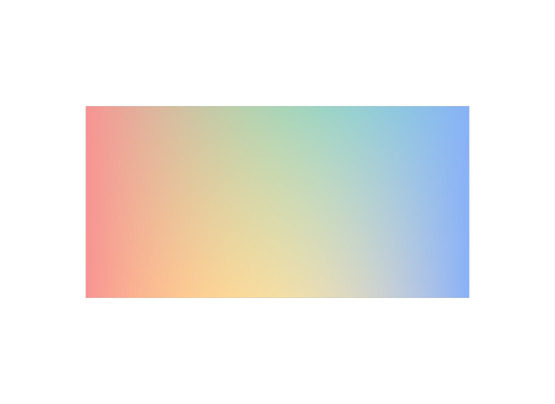
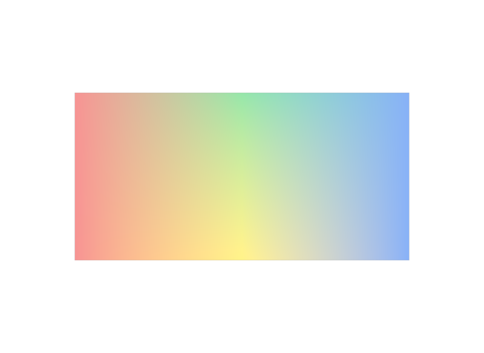

差が出ないので設定を疑ってしまう
細分化しないMeshではvertexとvaryingは同じ絵になります。これは仕様どおりの動作で、設定の誤りではありません。
LESSON 24D · PRIMVAR INTERPOLATION
値の個数はvertexと同じ。違いが出るのは細分化したときだけです
今日これだけ
公式情報に基づく説明
varyingは、vertexと同じくPointごとに一つの値を対応させます。必要な値の個数はまったく同じで、このPanelなら6個です。違うのは面の内側をどう埋めるかで、varyingはSurfaceの上を線形に補間します。vertexはSurfaceの基底関数にしたがうため、Meshを細分化する設定にしたときに結果が変わります。
USDA
#usda 1.0
(
defaultPrim = "World"
metersPerUnit = 1
upAxis = "Y"
)
def Xform "World"
{
def Mesh "Panel"
{
uniform token subdivisionScheme = "none"
int[] faceVertexCounts = [4, 4]
int[] faceVertexIndices = [0, 1, 4, 3, 1, 2, 5, 4]
point3f[] points = [
(0, 0, 0), (1, 0, 0), (2, 0, 0),
(0, 1, 0), (1, 1, 0), (2, 1, 0),
]
color3f[] primvars:displayColor = [
(0.85, 0.2, 0.2), (0.95, 0.8, 0.15), (0.15, 0.35, 0.85),
(0.85, 0.2, 0.2), (0.2, 0.7, 0.3), (0.15, 0.35, 0.85),
] (
interpolation = "varying"
)
}
}Lesson 24CのUSDAと比べると、変わっているのはinterpolationの行だけです。値の並びも個数もそのままで構いません。
結果

subdivisionScheme = "none"のとき、この描画結果はLesson 24Cのvertexの画像とバイト単位で一致しました。examples/lesson-24d/varying.usda / Apple USD Tools 0.25.2 のusdrecord（Hydra Storm・Metal）/ macOS 26.5.2・Apple M4同じ入力から同じ絵が出るので、細分化しないMeshだけを扱っているうちは、この2つを見分けることはできません。「見た目で区別できないのが正しい」と知っておくことが、この段階では大切です。
結果
同じ6色のままsubdivisionSchemeをcatmullClarkへ変え、細分化を有効にして描画すると、2つの結果は一致しなくなります。

interpolation = "vertex" + subdivisionScheme = "catmullClark"。細分化の規則で補間されるため、中央付近の色がなだらかにならされます。examples/lesson-24d/subdiv-vertex.usda / Apple USD Tools 0.25.2 のusdrecord（Hydra Storm・Metal）/ macOS 26.5.2・Apple M4
interpolation = "varying" + subdivisionScheme = "catmullClark"。線形補間なので、Pointに書いた色がより強く残ります。examples/lesson-24d/subdiv-varying.usda / Apple USD Tools 0.25.2 のusdrecord（Hydra Storm・Metal）/ macOS 26.5.2・Apple M4差はわずかですが、中央の黄と緑を見比べると、vertexのほうが色がならされ、varyingのほうが元の値が濃く残っているのが分かります。この2枚は画像として一致しません。
Diagram
Python
from pxr import Gf, Sdf, Usd, UsdGeom
stage = Usd.Stage.CreateNew("varying.usda")
UsdGeom.Xform.Define(stage, "/World")
mesh = UsdGeom.Mesh.Define(stage, "/World/Panel")
mesh.CreateSubdivisionSchemeAttr("none")
mesh.CreateFaceVertexCountsAttr([4, 4])
mesh.CreateFaceVertexIndicesAttr([0, 1, 4, 3, 1, 2, 5, 4])
mesh.CreatePointsAttr([
Gf.Vec3f(0, 0, 0), Gf.Vec3f(1, 0, 0), Gf.Vec3f(2, 0, 0),
Gf.Vec3f(0, 1, 0), Gf.Vec3f(1, 1, 0), Gf.Vec3f(2, 1, 0),
])
pv = UsdGeom.PrimvarsAPI(mesh).CreatePrimvar(
"displayColor", Sdf.ValueTypeNames.Color3fArray, UsdGeom.Tokens.varying)
pv.Set([
Gf.Vec3f(0.85, 0.2, 0.2), Gf.Vec3f(0.95, 0.8, 0.15), Gf.Vec3f(0.15, 0.35, 0.85),
Gf.Vec3f(0.85, 0.2, 0.2), Gf.Vec3f(0.2, 0.7, 0.3), Gf.Vec3f(0.15, 0.35, 0.85),
])
stage.Save()UsdGeom.Tokens.vertexをUsdGeom.Tokens.varyingへ変えるだけです。値の側は何も変えません。
USDA → Python mapping
USDA
interpolation = "varying"↓Python
UsdGeom.Tokens.varyingUSDA
uniform token subdivisionScheme = "catmullClark"↓Python
mesh.CreateSubdivisionSchemeAttr("catmullClark")Beginner notes
よくある間違い
細分化しないMeshではvertexとvaryingは同じ絵になります。これは仕様どおりの動作で、設定の誤りではありません。
どちらもPointの個数と同じです。varyingだけ値を増やしたり減らしたりする必要はありません。
Meshを細分化する設定にしたときや、NURBSなど別のSurfaceを扱うときには、補間の規則の違いがそのまま結果の違いになります。
Glossary
Official references
確認日: